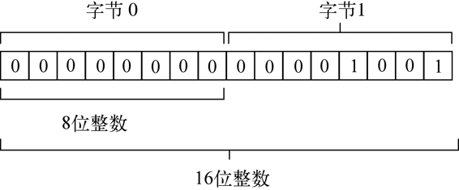

WebGL是针对Canvas的3D上下文。与其他Web技术不同，WebGL并不是W3C制定的标准，而是由Khronos Group制定的。其官方网站是这样介绍的：“Khronos Group是一个非盈利的由会员资助的协会，专注于为并行计算以及各种平台和设备上的图形及动态媒体制定无版税的开放标准。” Khronos Group也设计了其他图形处理API，比如OpenGL ES 2.0。浏览器中使用的WebGL就是基于OpenGL ES 2.0制定的。
OpenGL等3D图形语言是非常复杂的，本书不可能介绍其中每一个概念。熟悉OpenGL ES 2.0的读者可能会觉得WebGL更好理解一些，因为好多概念是相通的。
本节将适当地介绍OpenGL ES 2.0的一些概念，尽力解释其中的某些部分在WebGL中的实现。要全面了解OpenGL，请访问www.opengl.org。要全面学习WebGL，请参考www.learningwebgl.com，其中包含非常棒的系列教程1。
1 中文翻译版请参考http://www.hiwebgl.com/?p=42。
WebGL涉及的复杂计算需要提前知道数值的精度，而标准的JavaScript数值无法满足需要。为此，WebGL引入了一个概念，叫类型化数组（typed arrays）。类型化数组也是数组，只不过其元素被设置为特定类型的值。
类型化数组的核心就是一个名为ArrayBuffer的类型。每个ArrayBuffer对象表示的只是内存中指定的字节数，但不会指定这些字节用于保存什么类型的数据。通过ArrayBuffer所能做的，就是为了将来使用而分配一定数量的字节。例如，下面这行代码会在内存中分配20B。
var buffer = new ArrayBuffer(20);
创建了ArrayBuffer对象后，能够通过该对象获得的信息只有它包含的字节数，方法是访问其byteLength属性：
var bytes = buffer.byteLength;
虽然ArrayBuffer对象本身没有多少可说的，但对WebGL而言，使用它是极其重要的。而且，在涉及视图的时候，你才会发现它原来还是很有意思的。
1. 视图
使用ArrayBuffer（数组缓冲器类型）的一种特别的方式就是用它来创建数组缓冲器视图。其中，最常见的视图是DataView，通过它可以选择ArrayBuffer中一小段字节。为此，可以在创建DataView实例的时候传入一个ArrayBuffer、一个可选的字节偏移量（从该字节开始选择）和一个可选的要选择的字节数。例如：
//基于整个缓冲器创建一个新视图
var view = new DataView(buffer);
//创建一个开始于字节9的新视图
var view = new DataView(buffer, 9);
//创建一个从字节9开始到字节18的新视图
var view = new DataView(buffer, 9, 10);
实例化之后，DataView对象会把字节偏移量以及字节长度信息分别保存在byteOffset和byteLength属性中。
alert(view.byteOffset);
alert(view.byteLength);
通过这两个属性可以在以后方便地了解视图的状态。另外，通过其buffer属性也可以取得数组缓冲器。
读取和写入DataView的时候，要根据实际操作的数据类型，选择相应的getter和setter方法。下表列出了DataView支持的数据类型以及相应的读写方法。
| 数据类型 | getter | setter |
|---|---|---|
| 有符号8位整数 | getInt8(byteOffset) |
setInt8(byteOffset, value) |
| 无符号8位整数 | getUint8(byteOffset) |
setUint8(byteOffset, value) |
| 有符号16位整数 | getInt16(byteOffset,littleEndian) |
setInt16(byteOffset, value,littleEndian) |
| 无符号16位整数 | getUint16(byteOffset,littleEndian) |
setUint16(byteOffset,value, littleEndian) |
| 有符号32位整数 | getInt32(byteOffset,littleEndian) |
setInt32(byteOffset, value,littleEndian) |
| 无符号32位整数 | getUint32(byteOffset,littleEndian) |
setUint32(byteOffset,value, littleEndian) |
| 32位浮点数 | getFloat32(byteOffset,littleEndian) |
setFloat32(byteOffset,value, littleEndian) |
| 64位浮点数 | getFloat64(byteOffset,littleEndian) |
setFloat64(byteOffset,value, littleEndian) |
所有这些方法的第一个参数都是一个字节偏移量，表示要从哪个字节开始读取或写入。不要忘了，要保存有些数据类型的数据，可能需要不止1B。比如，无符号8位整数要用1B，而32位浮点数则要用4B。使用DataView，就需要你自己来管理这些细节，即要明确知道自己的数据需要多少字节，并选择正确的读写方法。例如：
var buffer = new ArrayBuffer(20),
view = new DataView(buffer),
value;
view.setUint16(0, 25);
view.setUint16(2, 50); //不能从字节1开始，因为16位整数要用2B
value = view.getUint16(0);
DataViewExample01.htm
以上代码把两个无符号16位整数保存到了数组缓冲器中。因为每个16位整数要用2B，所以保存第一个数的字节偏移量为0，而保存第二个数的字节偏移量为2。
用于读写16位或更大数值的方法都有一个可选的参数littleEndian。这个参数是一个布尔值，表示读写数值时是否采用小端字节序（即将数据的最低有效位保存在低内存地址中），而不是大端字节序（即将数据的最低有效位保存在高内存地址中）。如果你也不确定应该使用哪种字节序，那不用管它，就采用默认的大端字节序方式保存即可。
因为在这里使用的是字节偏移量，而非数组元素数，所以可以通过几种不同的方式来访问同一字节。例如：
var buffer = new ArrayBuffer(20),
view = new DataView(buffer),
value;
view.setUint16(0, 25);
value = view.getInt8(0);
alert(value); //0
DataViewExample02.htm
在这个例子中，数值25以16位无符号整数的形式被写入，字节偏移量为0。然后，再以8位有符号整数的方式读取该数据，得到的结果是0。这是因为25的二进制形式的前8位（第一个字节）全部是0，如图15-14所示。

图 15-14
可见，虽然DataView能让我们在字节级别上读写数组缓冲器中的数据，但我们必须自己记住要将数据保存到哪里，需要占用多少字节。这样一来，就会带来很多工作量，因此类型化视图也就应运而生。
2. 类型化视图
类型化视图一般也被称为类型化数组，因为它们除了元素必须是某种特定的数据类型外，与常规的数组无异。类型化视图也分几种，而且它们都继承了DataView。
Int8Array：表示8位二补整数。
Uint8Array：表示8位无符号整数。
Int16Array：表示16位二补整数。
Uint16Array：表示16位无符号整数。
Int32Array：表示32位二补整数。
Uint32Array：表示32位无符号整数。
Float32Array：表示32位IEEE浮点值。
Float64Array：表示64位IEEE浮点值。
每种视图类型都以不同的方式表示数据，而同一数据视选择的类型不同有可能占用一或多字节。例如，20B的ArrayBuffer可以保存20个Int8Array或Uint8Array，或者10个Int16Array或Uint16Array，或者5个Int32Array、Uint32Array或Float32Array，或者2个Float64Array。
由于这些视图都继承自DataView，因而可以使用相同的构造函数参数来实例化。第一个参数是要使用ArrayBuffer对象，第二个参数是作为起点的字节偏移量（默认为0），第三个参数是要包含的字节数。三个参数中只有第一个是必需的。下面来看几个例子。
//创建一个新数组，使用整个缓冲器
var int8s = new Int8Array(buffer);
//只使用从字节9开始的缓冲器
var int16s = new Int16Array(buffer, 9);
//只使用从字节9到字节18的缓冲器
var uint16s = new Uint16Array(buffer, 9, 10);
能够指定缓冲器中可用的字节段，意味着能在同一个缓冲器中保存不同类型的数值。比如，下面的代码就是在缓冲器的开头保存8位整数，而在其他字节中保存16位整数。
//使用缓冲器的一部分保存8位整数，另一部分保存16位整数
var int8s = new Int8Array(buffer, 0, 10);
var uint16s = new Uint16Array(buffer, 11, 10);
每个视图构造函数都有一个名为BYTES_PER_ELEMENT的属性，表示类型化数组的每个元素需要多少字节。因此，Uint8Array.BYTES_PER_ELEMENT就是1，而Float32Array.BYTES_PER_ELEMENT则为4。可以利用这个属性来辅助初始化。
//需要10个元素空间
var int8s = new Int8Array(buffer, 0, 10 * Int8Array.BYTES_PER_ELEMENT);
//需要5个元素空间
var uint16s = new Uint16Array(buffer, int8s.byteOffset + int8s.byteLength,
5 * Uint16Array.BYTES_PER_ELEMENT);
以上代码基于同一个数组缓冲器创建了两个视图。缓冲器的前10B用于保存8位整数，而其他字节用于保存无符号16位整数。在初始化Uint16Array的时候，使用了Int8Array的byteOffset和byteLength属性，以确保uint16s开始于8位数据之后。
如前所述，类型化视图的目的在于简化对二进制数据的操作。除了前面看到的优点之外，创建类型化视图还可以不用首先创建ArrayBuffer对象。只要传入希望数组保存的元素数，相应的构造函数就可以自动创建一个包含足够字节数的ArrayBuffer对象，例如：
//创建一个数组保存10个8位整数（10字节）
var int8s = new Int8Array(10);
//创建一个数组保存10个16位整数（20字节）
var int16s = new Int16Array(10);
另外，也可以把常规数组转换为类型化视图，只要把常规数组传入类型化视图的构造函数即可：
//创建一个数组保存5个8位整数（10字节）
var int8s = new Int8Array([10, 20, 30, 40, 50]);
这是用默认值来初始化类型化视图的最佳方式，也是WebGL项目中最常用的方式。
以这种方式来使用类型化视图，可以让它们看起来更像Array对象，同时也能确保在读写信息的时候使用正确的数据类型。
使用类型化视图时，可以通过方括号语法访问每一个数据成员，可以通过length属性确定数组中有多少元素。这样，对类型化视图的迭代与对Array对象的迭代就是一样的了。
for (var i=0, len=int8s.length; i < len; i++){
console.log("Value at position " + i + " is " + int8s[i]);
}
当然，也可以使用方括号语法为类型化视图的元素赋值。如果为相应元素指定的字节数放不下相应的值，则实际保存的值是最大可能值的模。例如，无符号16位整数所能表示的最大数值是65535，如果你想保存65536，那实际保存的值是0；如果你想保存65537，那实际保存的值是1，依此类推。
var uint16s = new Uint16Array(10);
uint16s[0] = 65537;
alert(uint16s[0]); //1
数据类型不匹配时不会抛出错误，所以你必须自己保证所赋的值不会超过相应元素的字节限制。
类型化视图还有一个方法，即subarray()，使用这个方法可以基于底层数组缓冲器的子集创建一个新视图。这个方法接收两个参数：开始元素的索引和可选的结束元素的索引。返回的类型与调用该方法的视图类型相同。例如：
var uint16s = new Uint16Array(10),
sub = uint16s.subarray(2, 5);
在以上代码中，sub也是Uint16Array的一个实例，而且底层与uint16s都基于同一个ArrayBuffer。通过大视图创建小视图的主要好处就是，在操作大数组中的一部分元素时，无需担心意外修改了其他元素。
类型化数组是WebGL项目中执行各种操作的重要基础。
目前，在支持的浏览器中，WebGL的名字叫"experimental-webgl"，这是因为WebGL规范仍然未制定完成。制定完成后，这个上下文的名字就会变成简单的"webgl"。如果浏览器不支持WebGL，那么取得该上下文时会返回null。在使用WebGL上下文时，务必先检测一下返回值。
var drawing = document.getElementById("drawing");
//确定浏览器支持<canvas>元素
if (drawing.getContext){
var gl = drawing.getContext("experimental-webgl");
if (gl){
//使用WebGL
}
}
WebGLExample01.htm
一般都把WebGL上下文对象命名为gl。大多数WebGL应用和示例都遵守这一约定，因为OpenGL ES 2.0规定的方法和值通常都以"gl"开头。这样做也可以保证JavaScript代码与OpenGL程序更相近。
取得了WebGL上下文之后，就可以开始3D绘图了。如前所述，WebGL是OpenGL ES 2.0的Web版，因此本节讨论的概念实际上就是OpenGL概念在JavaScript中的实现。
通过给getContext()传递第二个参数，可以为WebGL上下文设置一些选项。这个参数本身是一个对象，可以包含下列属性。
alpha：值为true，表示为上下文创建一个Alpha通道缓冲区；默认值为true。
depth：值为true，表示可以使用16位深缓冲区；默认值为true。
stencil：值为true，表示可以使用8位模板缓冲区；默认值为false。
antialias：值为true，表示将使用默认机制执行抗锯齿操作；默认值为true。
premultipliedAlpha：值为true，表示绘图缓冲区有预乘Alpha值；默认值为true。
preserveDrawingBuffer：值为true，表示在绘图完成后保留绘图缓冲区；默认值为false。建议确实有必要的情况下再开启这个值，因为可能影响性能。
传递这个选项对象的方式如下：
var drawing = document.getElementById("drawing");
//确定浏览器支持<canvas>元素
if (drawing.getContext){
var gl = drawing.getContext("experimental-webgl", { alpha: false});
if (gl){
//使用WebGL
}
}
WebGLExample01.htm
大多数上下文选项只在高级技巧中使用。很多时候，各个选项的默认值就能满足我们的要求。
如果getContext()无法创建WebGL上下文，有的浏览器会抛出错误。为此，最好把调用封装到一个try-catch块中。
Insert IconMargin [download]var drawing = document.getElementById("drawing"),
gl;
//确定浏览器支持<canvas>元素
if (drawing.getContext){
try {
gl = drawing.getContext("experimental-webgl");
} catch (ex) {
//什么也不做
}
if (gl){
//使用WebGL
} else {
alert("WebGL context could not be created.");
}
}
WebGLExample01.htm
1. 常量
如果你熟悉OpenGL，那肯定会对各种操作中使用非常多的常量印象深刻。这些常量在OpenGL中都带前缀GL_。在WebGL中，保存在上下文对象中的这些常量都没有GL_前缀。比如说，GL_COLOR_BUFFER_BIT常量在WebGL上下文中就是gl.COLOR_BUFFER_BIT。WebGL以这种方式支持大多数OpenGL常量（有一部分常量是不支持的）。
2. 方法命名
OpenGL（以及WebGL）中的很多方法都试图通过名字传达有关数据类型的信息。如果某方法可以接收不同类型及不同数量的参数，看方法名的后缀就可以知道。方法名的后缀会包含参数个数（1到4）和接收的数据类型（f表示浮点数，i表示整数）。例如，gl.uniform4f()意味着要接收4个浮点数，而gl.uniform3i()则表示要接收3个整数。
也有很多方法接收数组参数而非一个个单独的参数。这样的方法其名字中会包含字母v（即vector，矢量）。因此，gl.uniform3iv()可以接收一个包含3个值的整数数组。请大家记住以上命名约定，这样对理解后面关于WebGL的讨论很有帮助。
3. 准备绘图
在实际操作WebGL上下文之前，一般都要使用某种实色清除<canvas>，为绘图做好准备。为此，首先必须使用clearColor()方法来指定要使用的颜色值，该方法接收4个参数：红、绿、蓝和透明度。每个参数必须是一个0到1之间的数值，表示每种分量在最终颜色中的强度。来看下面的例子。
gl.clearColor(0,0,0,1); //black
gl.clear(gl.COLOR_BUFFER_BIT);
WebGLExample01.htm
以上代码把清理颜色缓冲区的值设置为黑色，然后调用了clear()方法，这个方法与OpenGL中的glClear()等价。传入的参数gl.COLOR_BUFFER_BIT告诉WebGL使用之前定义的颜色来填充相应区域。一般来说，都要先清理缓冲区，然后再执行其他绘图操作。
4. 视口与坐标
开始绘图之前，通常要先定义WebGL的视口（viewport）。默认情况下，视口可以使用整个<canvas>区域。要改变视口大小，可以调用viewport()方法并传入4个参数：（视口相对于<canvas>元素的）x坐标、y坐标、宽度和高度。例如，下面的调用就使用了<canvas>元素：
gl.viewport(0, 0, drawing.width, drawing.height);
视口坐标与我们通常熟悉的网页坐标不一样。视口坐标的原点(0,0)在<canvas>元素的左下角，x轴和y轴的正方向分别是向右和向上，可以定义为(width-1, height-1)，如图15-15所示。
图 15-15
知道怎么定义视口大小，就可以只在<canvas>元素的部分区域中绘图。来看下面的例子。
//视口是<canvas>左下角的四分之一区域
gl.viewport(0, 0, drawing.width/2, drawing.height/2);
//视口是<canvas>左上角的四分之一区域
gl.viewport(0, drawing.height/2, drawing.width/2, drawing.height/2);
//视口是<canvas>右下角的四分之一区域
gl.viewport(drawing.width/2, 0, drawing.width/2, drawing.height/2);
另外，视口内部的坐标系与定义视口的坐标系也不一样。在视口内部，坐标原点(0,0)是视口的中心点，因此视口左下角坐标为(-1,-1)，而右上角坐标为(1,1)，如图15-16所示。
图 15-16
如果在视口内部绘图时使用视口外部的坐标，结果可能会被视口剪切。比如，要绘制的形状有一个顶点在(1,2)，那么该形状在视口右侧的部分会被剪切掉。
5. 缓冲区
顶点信息保存在JavaScript的类型化数组中，使用之前必须转换到WebGL的缓冲区。要创建缓冲区，可以调用gl.createBuffer()，然后使用gl.bindBuffer()绑定到WebGL上下文。这两步做完之后，就可以用数据来填充缓冲区了。例如：
var buffer = gl.createBuffer();
gl.bindBuffer(gl.ARRAY_BUFFER, buffer);
gl.bufferData(gl.ARRAY_BUFFER, new Float32Array([0, 0.5, 1]), gl.STATIC_DRAW);
调用gl.bindBuffer()可以将buffer设置为上下文的当前缓冲区。此后，所有缓冲区操作都直接在buffer中执行。因此，调用gl.bufferData()时不需要明确传入buffer也没有问题。最后一行代码使用Float32Array中的数据初始化了buffer（一般都是用Float32Array来保存顶点信息）。如果想使用drawElements()输出缓冲区的内容，也可以传入gl.ELEMENT_ARRAY_BUFFER。
gl.bufferData()的最后一个参数用于指定使用缓冲区的方式，取值范围是如下几个常量。
gl.STATIC_DRAW：数据只加载一次，在多次绘图中使用。
gl.STREAM_DRAW：数据只加载一次，在几次绘图中使用。
gl.DYNAMIC_DRAW：数据动态改变，在多次绘图中使用。
如果不是非常有经验的OpenGL程序员，多数情况下将缓冲区使用方式设置为gl.STATIC_DRAW即可。
在包含缓冲区的页面重载之前，缓冲区始终保留在内存中。如果你不想要某个缓冲区了，可以直接调用gl.deleteBuffer()释放内存：
gl.deleteBuffer(buffer);
6. 错误
JavaScript与WebGL之间的一个最大的区别在于，WebGL操作一般不会抛出错误。为了知道是否有错误发生，必须在调用某个可能出错的方法后，手工调用gl.getError()方法。这个方法返回一个表示错误类型的常量。可能的错误常量如下。
gl.NO_ERROR：上一次操作没有发生错误（值为0）。
gl.INVALID_ENUM：应该给方法传入WebGL常量，但却传错了参数。
gl.INVALID_VALUE：在需要无符号数的地方传入了负值。
gl.INVALID_OPERATION：在当前状态下不能完成操作。
gl.OUT_OF_MEMORY：没有足够的内存完成操作。
gl.CONTEXT_LOST_WEBGL：由于外部事件（如设备断电）干扰丢失了当前WebGL上下文。
每次调用gl.getError()方法返回一个错误值。第一次调用后，后续对gl.getError()的调用可能会返回另一个错误值。如果发生了多个错误，需要反复调用gl.getError()直至它返回gl.NO_ERROR。在执行了很多操作的情况下，最好通过一个循环来调用getError()，如下所示：
var errorCode = gl.getError();
while(errorCode){
console.log("Error occurred: " + errorCode);
errorCode = gl.getError();
}
如果WebGL脚本输出不正确，那在脚本中放几行gl.getError()有助于找出问题所在。
7. 着色器
着色器（shader）是OpenGL中的另一个概念。WebGL中有两种着色器：顶点着色器和片段（或像素）着色器。顶点着色器用于将3D顶点转换为需要渲染的2D点。片段着色器用于准确计算要绘制的每个像素的颜色。WebGL着色器的独特之处也是其难点在于，它们并不是用JavaScript写的。这些着色器是使用GLSL（OpenGL Shading Language，OpenGL着色语言）写的，GLSL是一种与C和JavaScript完全不同的语言。
8. 编写着色器
GLSL是一种类C语言，专门用于编写OpenGL着色器。因为WebGL是OpenGL ES 2.0的实现，所以OpenGL中使用的着色器可以直接在WebGL中使用。这样就方便了将桌面图形应用移植到浏览器中。
每个着色器都有一个main()方法，该方法在绘图期间会重复执行。为着色器传递数据的方式有两种：Attribute和Uniform。通过Attribute可以向顶点着色器中传入顶点信息，通过Uniform可以向任何着色器传入常量值。Attribute和Uniform在main()方法外部定义，分别使用关键字attribute和uniform。在这两个值类型关键字之后，是数据类型和变量名。下面是一个简单的顶点着色器的例子。
//OpenGL着色语言
//着色器，作者Bartek Drozdz，摘自他的文章
//http://www.netmagazine.com/tutorials/get-started-webgl-draw-square
attribute vec2 aVertexPosition;
void main() {
gl_Position = vec4(aVertexPosition, 0.0, 1.0);
}
WebGLExample02.htm
这个顶点着色器定义了一个名为aVertexPosition的Attribute，这个Attribute是一个数组，包含两个元素（数据类型为vec2），表示x和y坐标。即使只接收到两个坐标，顶点着色器也必须把一个包含四方面信息的顶点赋值给特殊变量gl_Position。这里的着色器创建了一个新的包含四个元素的数组（vec4），填补缺失的坐标，结果是把2D坐标转换成了3D坐标。
除了只能通过Uniform传入数据外，片段着色器与顶点着色器类似。以下是片段着色器的例子。
//OpenGL着色语言
//着色器，作者Bartek Drozdz，摘自他的文章
//http://www.netmagazine.com/tutorials/get-started-webgl-draw-square
uniform vec4 uColor;
void main() {
gl_FragColor = uColor;
}
WebGLExample02.htm
片段着色器必须返回一个值，赋给变量gl_FragColor，表示绘图时使用的颜色。这个着色器定义了一个包含四方面信息（vec4）的统一的颜色uColor。从以上代码看，这个着色器除了把传入的值赋给gl_FragColor什么也没做。uColor的值在这个着色器内部不能改变。
OpenGL着色语言比这里看到的还要复杂。专门讲解这门语言的书有很多，本节只是从辅助使用WebGL的角度简要介绍一下该语言。要了解更多信息，请参考Randi J. Rost编著的OpenGL Shading Language（Addison-Wesley,2006）。
9. 编写着色器程序
浏览器不能理解GLSL程序，因此必须准备好字符串形式的GLSL程序，以便编译并链接到着色器程序。为便于使用，通常是把着色器包含在页面的<script>标签内，并为该标签指定一个自定义的type属性。由于无法识别type属性值，浏览器不会解析<script>标签中的内容，但这不影响你读写其中的代码。例如：
<script type="x-webgl/x-vertex-shader" id="vertexShader">
attribute vec2 aVertexPosition;
void main() {
gl_Position = vec4(aVertexPosition, 0.0, 1.0);
}
</script>
<script type="x-webgl/x-fragment-shader" id="fragmentShader">
uniform vec4 uColor;
void main() {
gl_FragColor = uColor;
}
</script>
WebGLExample02.htm
然后，可以通过text属性提取出<script>元素的内容：
var vertexGlsl = document.getElementById("vertexShader").text,
fragmentGlsl = document.getElementById("fragmentShader").text;
复杂一些的WebGL应用可能会通过Ajax（详见第21章）动态加载着色器。而使用着色器的关键是要有字符串形式的GLSL程序。
取得了GLSL字符串之后，接下来就是创建着色器对象。要创建着色器对象，可以调用gl.createShader()方法并传入要创建的着色器类型（gl.VERTEX_SHADER或gl.FRAGMENT_SHADER）。编译着色器使用的是gl.compileShader()。请看下面的例子。
var vertexShader = gl.createShader(gl.VERTEX_SHADER);
gl.shaderSource(vertexShader, vertexGlsl);
gl.compileShader(vertexShader);
var fragmentShader = gl.createShader(gl.FRAGMENT_SHADER);
gl.shaderSource(fragmentShader, fragmentGlsl);
gl.compileShader(fragmentShader);
WebGLExample02.htm
以上代码创建了两个着色器，并将它们分别保存在vertexShader和fragmentShader中。而使用下列代码，可以把这两个对象链接到着色器程序中。
var program = gl.createProgram();
gl.attachShader(program, vertexShader);
gl.attachShader(program, fragmentShader);
gl.linkProgram(program);
WebGLExample02.htm
第一行代码创建了程序，然后调用attachShader()方法又包含了两个着色器。最后调用gl.linkProgram()则把两个着色器封装到了变量program中。链接完程序之后，就可以通过gl.useProgram()方法通知WebGL使用这个程序了。
gl.useProgram(program);
调用gl.useProgram()方法后，所有后续的绘图操作都将使用这个程序。
10. 为着色器传入值
前面定义的着色器都必须接收一个值才能工作。为了给着色器传入这个值，必须先找到要接收这个值的变量。对于Uniform变量，可以使用gl.getUniformLocation()，这个方法返回一个对象，表示Uniform变量在内存中的位置。然后可以基于变量的位置来赋值。例如：
var uColor = gl.getUniformLocation(program, "uColor");
gl.uniform4fv(uColor, [0, 0, 0, 1]);
WebGLExample02.htm
第一行代码从program中找到Uniform变量uColor，返回了它在内存中的位置。第二行代码使用gl.uniform4fv()给uColor赋值。
对于顶点着色器中的Attribute变量，也是差不多的赋值过程。要找到Attribute变量在内存中的位置，可以调用gl.getAttribLocation()。取得了位置之后，就可以像下面这样赋值了：
var aVertexPosition = gl.getAttribLocation(program, "aVertexPosition");
gl.enableVertexAttribArray(aVertexPosition);
gl.vertexAttribPointer(aVertexPosition, itemSize, gl.FLOAT, false, 0, 0);
WebGLExample02.htm
在此，我们取得了aVertexPosition的位置，然后又通过gl.enableVertexAttribArray()启用它。最后一行创建了指针，指向由gl.bindBuffer()指定的缓冲区，并将其保存在aVertexPosition中，以便顶点着色器使用。
11. 调试着色器和程序
与WebGL中的其他操作一样，着色器操作也可能会失败，而且也是静默失败。如果你想知道着色器或程序执行中是否发生了错误，必须亲自询问WebGL上下文。
对于着色器，可以在操作之后调用gl.getShaderParameter()，取得着色器的编译状态：
if (!gl.getShaderParameter(vertexShader, gl.COMPILE_STATUS)){
alert(gl.getShaderInfoLog(vertexShader));
}
WebGLExample02.htm
这个例子检测了vertexShader的编译状态。如果着色器编译成功，调用gl.getShaderParameter()会返回true。如果返回的是false，说明编译期间发生了错误，此时调用gl.getShaderInfoLog()并传入相应的着色器就可以取得错误消息。错误消息就是一个表示问题所在的字符串。无论是顶点着色器，还是片段着色器，都可以使用gl.getShaderParameter()和gl.getShaderInfoLog()方法。
程序也可能会执行失败，因此也有类似的方法——gl.getProgramParameter()，可以用来检测执行状态。最常见的程序失败发生在链接过程中，要检测链接错误，可以使用下列代码。
if (!gl.getProgramParameter(program, gl.LINK_STATUS)){
alert(gl.getProgramInfoLog(program));
}
WebGLExample02.htm
与gl.getShaderParameter()类似，gl.getProgramParameter()返回true表示链接成功，返回false表示链接失败。同样，也有一个gl.getProgramInfoLog()方法，用于捕获程序失败的消息。
以上介绍的这些方法主要在开发过程中用于调试。只要没有依赖外部代码，就可以放心地把它们从产品代码中删除。
12. 绘图
WebGL只能绘制三种形状：点、线和三角。其他所有形状都是由这三种基本形状合成之后，再绘制到三维空间中的。执行绘图操作要调用gl.drawArrays()或gl.drawElements()方法，前者用于数组缓冲区，后者用于元素数组缓冲区。
gl.drawArrays()或gl.drawElements()的第一个参数都是一个常量，表示要绘制的形状。可取值的常量范围包括以下这些。
gl.POINTS：将每个顶点当成一个点来绘制。
gl.LINES：将数组当成一系列顶点，在这些顶点间画线。每个顶点既是起点也是终点，因此数组中必须包含偶数个顶点才能完成绘制。
gl.LINE_LOOP：将数组当成一系列顶点，在这些顶点间画线。线条从第一个顶点到第二个顶点，再从第二个顶点到第三个顶点，依此类推，直至最后一个顶点。然后再从最后一个顶点到第一个顶点画一条线。结果就是一个形状的轮廓。
gl.LINE_STRIP：除了不画最后一个顶点与第一个顶点之间的线之外，其他与gl.LINE_LOOP相同。
gl.TRIANGLES：将数组当成一系列顶点，在这些顶点间绘制三角形。除非明确指定，每个三角形都单独绘制，不与其他三角形共享顶点。
gl.TRIANGLES_STRIP：除了将前三个顶点之后的顶点当作第三个顶点与前两个顶点共同构成一个新三角形外，其他都与gl.TRIANGLES相同。例如，如果数组中包含A、B、C、D四个顶点，则第一个三角形连接ABC，而第二个三角形连接BCD。
gl. TRIANGLES_FAN：除了将前三个顶点之后的顶点当作第三个顶点与前一个顶点及第一个顶点共同构成一个新三角形外，其他都与gl.TRIANGLES相同。例如，如果数组中包含A、B、C、D四个顶点，则第一个三角形连接ABC，而第二个三角形连接ACD。
gl.drawArrays()方法接收上面列出的常量中的一个作为第一个参数，接收数组缓冲区中的起始索引作为第二个参数，接收数组缓冲区中包含的顶点数（点的集合数）作为第三个参数。下面的代码使用gl.drawArrays()在画布上绘制了一个三角形。
//假设已经使用本节前面定义的着色器清除了视口
//定义三个顶点以及每个顶点的x和y坐标
var vertices = new Float32Array([ 0, 1, 1, -1, -1, -1 ]),
buffer = gl.createBuffer(),
vertexSetSize = 2,
vertexSetCount = vertices.length/vertexSetSize,
uColor, aVertexPosition;
//把数据放到缓冲区
gl.bindBuffer(gl.ARRAY_BUFFER, buffer);
gl.bufferData(gl.ARRAY_BUFFER, vertices, gl.STATIC_DRAW);
//为片段着色器传入颜色值
uColor = gl.getUniformLocation(program, "uColor");
gl.uniform4fv(uColor, [ 0, 0, 0, 1 ]);
//为着色器传入顶点信息
aVertexPosition = gl.getAttribLocation(program, "aVertexPosition");
gl.enableVertexAttribArray(aVertexPosition);
gl.vertexAttribPointer(aVertexPosition, vertexSetSize, gl.FLOAT, false, 0, 0);
//绘制三角形
gl.drawArrays(gl.TRIANGLES, 0, vertexSetCount);
WebGLExample02.htm
这个例子定义了一个Float32Array，包含三组顶点（每个顶点由两点表示）。这里关键是要知道顶点的大小及数量，以便将来计算时使用。把vertexSetSize设置为2之后，就可以计算出vertexSetCount的值。把顶点的信息保存在缓冲区中后，又把颜色信息传给了片段着色器。
接下来，给顶点着色器传入顶点大小以及gl.FLOAT，后者表示顶点坐标是浮点数。传入的第四个参数是一个布尔值，false在此表示坐标不是标准化的。第五个参数是步长值（stride value），表示取得下一个值的时候，要跳过多少个数组元素。除非你真需要跳过数组元素，否则传入0即可。最后一个参数是起点偏移量，值为0表示从第一个元素开始。
最后一步就是使用gl.drawArrays()绘制三角形。传入gl.TRIANGLES作为第一个参数，表示在(0,1)、(1,-1)和(-1,-1)点之间绘制三角形，并使用传给片段着色器的颜色来填充它。第二个参数是缓冲区中的起点偏移量，最后一个参数是要读取的顶点总数。这次绘图操作的结果如图15-17所示。
图 15-17
通过修改gl.drawArrays()的第一个参数，可以修改绘制三角形的方式。图15-18展示了传入不同的参数后可能得到的结果。
图 15-18
13. 纹理
WebGL的纹理可以使用DOM中的图像。要创建一个新纹理，可以调用gl.createTexture()，然后再将一幅图像绑定到该纹理。如果图像尚未加载到内存中，可能需要创建一个Image对象的实例，以便动态加载图像。图像加载完成之前，纹理不会初始化，因此，必须在load事件触发后才能设置纹理。例如：
var image = new Image(),
texture;
image.src = "smile.gif";
image.onload = function(){
texture = gl.createTexture();
gl.bindTexture(gl.TEXTURE_2D, texture);
gl.pixelStorei(gl.UNPACK_FLIP_Y_WEBGL, true);
gl.texImage2D(gl.TEXTURE_2D, 0, gl.RGBA, gl.RGBA, gl.UNSIGNED_BYTE, image);
gl.texParameteri(gl.TEXTURE_2D, gl.TEXTURE_MAG_FILTER, gl.NEAREST);
gl.texParameteri(gl.TEXTURE_2D, gl.TEXTURE_MIN_FILTER, gl.NEAREST);
//清除当前纹理
gl.bindTexture(gl.TEXTURE_2D, null);
}
除了使用DOM中的图像之外，以上步骤与在OpenGL中创建纹理的步骤相同。最大的差异是使用gl.pixelStore1()设置像素存储格式。gl.UNPACK_FLIP_Y_WEBGL是WebGL独有的常量，在加载Web中的图像时，多数情况下都必须使用这个常量。这主要是因为GIF、JPEG和PNG图像与WebGL使用的坐标系不一样，如果没有这个标志，解析图像时就会发生混乱。
用作纹理的图像必须与包含页面来自同一个域，或者是保存在启用了CORS（Cross-Origin Resource Sharing，跨域资源共享）的服务器上。第21章将讨论CORS。
<video>元素中的视频，甚至其他<canvas>元素都可以用作纹理。跨域资源限制同样适用于视频。
14. 读取像素
与2D上下文 类似，通过WebGL上下文也能读取像素值。读取像素值的方法readPixels()与OpenGL中的同名方法只有一点不同，即最后一个参数必须是类型化数组。像素信息是从帧缓冲区读取的，然后保存在类型化数组中。readPixels()方法的参数有：x、 y、宽度、高度、图像格式、数据类型和类型化数组。前4个参数指定读取哪个区域中的像素。图像格式参数几乎总是gl.RGBA。数据类型参数用于指定保存在类型化数组中的数据的类型，但有以下限制。
如果类型是gl.UNSIGNED_BYTE，则类型化数组必须是Uint8Array。
如果类型是gl.UNSIGNED_SHORT_5_6_5、gl.UNSIGNED_SHORT_4_4_4_4或gl.UNSIGNED_SHORT_5_5_5_1，则类型化数组必须是Uint16Array。
下面是一个简单的例子。
var pixels = new Uint8Array(25*25);
gl.readPixels(0, 0, 25, 25, gl.RGBA, gl.UNSIGNED_BYTE, pixels);
以上代码从帧缓冲区中读取了25×25像素的区域，将读取到的像素信息保存到了pixels数组中。其中，每个像素的颜色由4个数组元素表示，分别代表红、绿、蓝和透明度。每个数组元素的值介于0到255之间（包含0和255）。不要忘了根据返回的数据大小初始化类型化数组。
在浏览器绘制更新的WebGL图像之前调用readPixels()不会有什么意外。绘制发生后，帧缓冲区会恢复其原始的干净状态，而调用readPixels()返回的像素数据反映的就是清除缓冲区后的状态。如果你想在绘制发生后读取像素数据，那在初始化WebGL上下文时必须传入适当的preserveDrawingBuffer选项（前面讨论过）。
var gl = drawing.getContext("experimental-webgl", { preserveDrawingBuffer: true; });
设置这个标志的意思是让帧缓冲区在下一次绘制之前，保留其最后的状态。这个选项会导致性能损失，因此能不用最好不要用。
Firefox 4+和Chrome都实现了WebGL API。Safari 5.1也实现了WebGL，但默认是禁用的。WebGL比较特别的地方在于，某个浏览器的某个版本实现了它，并不一定意味着就真能使用它。某个浏览器支持WebGL，至少意味着两件事：首先，浏览器本身必须实现了WebGL API；其次，计算机必须升级显示驱动程序。运行Windows XP等操作系统的一些老机器，其驱动程序一般都不是最新的。因此，这些计算机中的浏览器都会禁用WebGL。从稳妥的角度考虑，在使用WebGL之前，最好检测其是否得到了支持，而不是只检测特定的浏览器版本。
大家别忘了，WebGL还是一个正在制定和发展中的规范。不管是函数名、函数签名，还是数据类型，都有可能改变。可以说，WebGL目前只适合实验性地学习，不适合真正开发和应用。